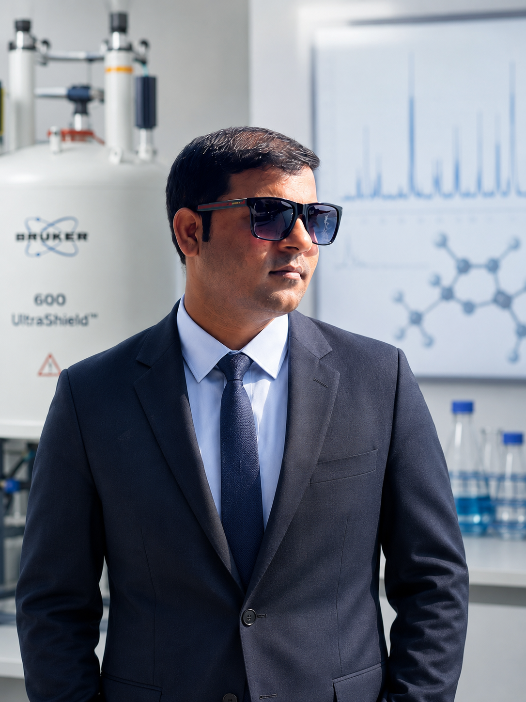

Multi-Omics • Biomarker Discovery • Metabolomics
Dr. Umesh Kumar Assistant Professor — SR University, Warangal
Multi-Omics and Biomarker Researcher with 12+ years of expertise in metabolomics, lipidomics, multi-omics integration, NMR spectroscopy, LC-MS/MS, and machine learning for clinical biomarker discovery and precision medicine.
About Me
Multi-Omics and Biomarker Researcher translating complex biological data into clinical insights.
I am a Multi-Omics and Biomarker Researcher with over 12 years of expertise in Metabolomics, Lipidomics, Multi-Omics Integration, Spatial Omics, and Bioinformatics for multivariate statistical analysis and Machine Learning using Python and R. I am an experienced practitioner of NMR spectroscopy (400–800 MHz), LC-MS/MS, and GC-MS/MS for clinical and pre-clinical biomarker discovery, method development, and large-scale population-based metabolomics.
I hold a PhD in Clinical Metabolomics from Babasaheb Bhimrao Ambedkar University (awarded 2022) through the Centre of BioMedical Research (CBMR), Lucknow, funded by the ICMR-Senior Research Fellowship. My doctoral thesis identified NMR-based metabolic signatures of autoimmune inflammatory diseases including Takayasu arteritis and Lupus Nephritis. I have 50+ peer-reviewed publications (—+ Google Scholar citations, h-index —, i10-index —), comprising 21 Q1 and 20 Q2 papers, with 9 as first author, 14 as second author, and 12 papers ranked in the top 10 percentile globally.
I qualified four national-level competitive examinations: GATE (2014), ICMR-JRF (2014), CSIR-NET Lectureship (2015), and the UPHESC Assistant Professorship (2022). My international postdoctoral experience at the University of Innsbruck, Austria involved developing SOPs for multi-biofluid metabolomics and processing >1,200 clinical samples under the VASCage programme on vascular health. I am presently Assistant Professor at SR University, Warangal (since July 2026) and continue as Guest Researcher at SGPGIMS, Lucknow.
Education
Experience
Research and teaching career spanning India, Austria, and multiple premier institutes.
Teaching Computational Chemistry, Omics Data Analysis, and Machine Learning in Biology at the undergraduate and postgraduate levels. Establishing a state-of-the-art Metabolomics & Multi-Omics Research Facility for biomarker discovery and precision medicine. Mentoring student research projects, guiding interdisciplinary collaborative studies, and developing course curricula for modern bioinformatics and systems biology programmes.
Actively pursuing extramural funding from DST-SERB, ICMR, and UGC for establishing NMR and LC-MS/MS based translational metabolomics platforms. Supervising PhD scholars in multi-omics integration, metabolic pathway analysis, and ML-driven biomarker panel design.
National Examinations
Technical Skills
Bench, analytical, and computational capabilities for translational metabolomics research.
- 1D-NMR (CPMG, ZGPR, NOESY)
- 2D-NMR (JRES, COSY)
- 1H-13C NMR (HSQC, HMBC)
- Topspin
- Amix Aurelia
- Chenomx
- HPLC (Agilent, Waters)
- LC-MS/MS (Agilent, Waters)
- GC-MS/MS (Shimadzu)
- Compound Discoverer
- MassLynx / MassHunter
- XCMS / Lipid Maps
- Python
- R
- MetaboAnalyst
- SIMCA
- GraphPad Prism
- PCA / PLS-DA / OPLS-DA
- HMDB
- Reactome
- KEGG
- Biorender
- Chem Biodraw
- Adobe Illustrator
- FTIR / UV Spectroscopy
- ELISA / Antioxidant Assay
- DNA/RNA Isolation
- Cell Culture
- Flow Cytometry
- Microscopy / SEM
- Serum / Plasma
- Urine
- Stool / Saliva
- Milk / Tissue
- Colostrum
- Biofluid Extraction
Research Interests
Research Projects
Publications
50+ peer-reviewed articles in high-impact journals spanning metabolomics, biomarker discovery, and translational research.
Q1 = Q1 journal • Top 10% = top 10 percentile • IF X.X = Impact Factor • Citations: XX
Full list: Google Scholar
Memberships & Editorial Roles
Reviewing Editor — Molecular Diagnostics & Therapeutics
Review Editor — Frontiers in Molecular Biosciences
Supervision & Mentoring
- Mentored 2 PhD scholars in metabolomics-based dissertation research
- Mentored 5 MSc students in NMR-based metabolomics projects
- Supervised 1 Senior Research Fellow
- Supervised 3 PhD scholars
- Supervised 1 Master's student
Academic Administration: Served as Examination Centre In-Charge Officer (3 times) for undergraduate and postgraduate examinations conducted by CSJM University.
Awards & Recognitions
Key Collaborators
Research Vision
"My long-term goal is to lead innovative metabolomics research that uncovers disease mechanisms, identifies clinically actionable biomarkers, and accelerates the translation of omics science into personalized healthcare solutions."
Get in Touch
Open to research collaborations, academic discussions, and partnership opportunities in metabolomics, biomarker discovery, and multi-omics integration.